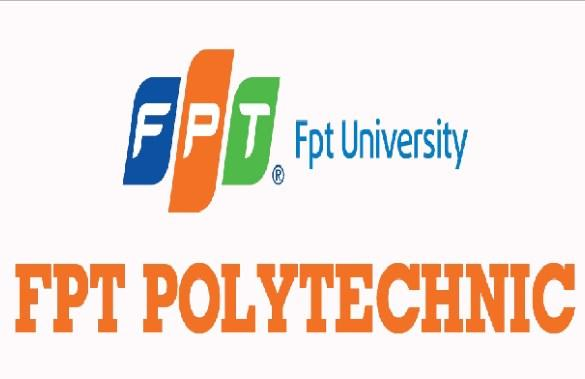

XÂY DỰNG TRANG WEB
 FPT-Polytechnic hân hạnh chào đón các bạn đến với môn xây dựng trang web.Kết thúc môn học này các bạn có thể tự tay xây dựng cho mình một website tỉnh dựa trên kiến thức HTML và CSS.Là một trong những môi trường đào tạo năng động, linh hoạt và luôn đổi mới, tại Cao đẳng FPT Polytechnic, quá trình đào tạo, rèn luyện tay nghề cho sinh viên là một quá trình khép kín giữa nhà trường – sinh viên – doanh nghiệp.Không theo những lối mòn giảng dạy truyền thống "thầy giảng – trò chép", ngay từ khi sinh viên nhập học tại FPT Polytechnic, các bạn sẽ được học tập với 70% thời lượng là thực hành, cầm tay chỉ việc từ những giảng viên có nhiều năm kinh nghiệm. Ngay cả trong thời điểm học tập online, sinh viên cũng được hướng dẫn thực hành tại nhà bằng chính những dụng cụ học tập vốn có gần gũi xung quanh cuộc sống, hay xây dựng bài tập thực hành, bài tập dự án từ xa đầy chuyên nghiệp.Sinh viên Cao đẳng FPT Polytechnic ngay từ trên ghế nhà trường đã được học tập và đào tạo những kỹ năng thiết yếu, đáp ứng nhu cầu của doanh nghiệp như thuyết trình, kỹ năng làm việc nhóm, quản trị dự án, khởi sự doanh nghiệp…tất cả quá trình học tập tại trường như một buổi làm việc "thu nhỏ" tại doanh nghiệp, sinh viên được chủ động xây dựng bối cảnh học tập và thực hành sát với thực tế dưới sự hướng dẫn của thầy cô giáo.Chính vì vậy, theo thống kê của phòng Quan hệ doanh nghiệp, 97,7% sinh viên FPT Polytechnic tốt nghiệp có việc làm và mức lương cạnh tranh ngay trong năm đầu tiên. Không chỉ vậy, nhiều sinh viên đang theo học tại trường cũng chủ động tìm kiếm cơ hội việc làm từ sớm với mức thu nhập hấp dẫn.
FPT-Polytechnic hân hạnh chào đón các bạn đến với môn xây dựng trang web.Kết thúc môn học này các bạn có thể tự tay xây dựng cho mình một website tỉnh dựa trên kiến thức HTML và CSS.Là một trong những môi trường đào tạo năng động, linh hoạt và luôn đổi mới, tại Cao đẳng FPT Polytechnic, quá trình đào tạo, rèn luyện tay nghề cho sinh viên là một quá trình khép kín giữa nhà trường – sinh viên – doanh nghiệp.Không theo những lối mòn giảng dạy truyền thống "thầy giảng – trò chép", ngay từ khi sinh viên nhập học tại FPT Polytechnic, các bạn sẽ được học tập với 70% thời lượng là thực hành, cầm tay chỉ việc từ những giảng viên có nhiều năm kinh nghiệm. Ngay cả trong thời điểm học tập online, sinh viên cũng được hướng dẫn thực hành tại nhà bằng chính những dụng cụ học tập vốn có gần gũi xung quanh cuộc sống, hay xây dựng bài tập thực hành, bài tập dự án từ xa đầy chuyên nghiệp.Sinh viên Cao đẳng FPT Polytechnic ngay từ trên ghế nhà trường đã được học tập và đào tạo những kỹ năng thiết yếu, đáp ứng nhu cầu của doanh nghiệp như thuyết trình, kỹ năng làm việc nhóm, quản trị dự án, khởi sự doanh nghiệp…tất cả quá trình học tập tại trường như một buổi làm việc "thu nhỏ" tại doanh nghiệp, sinh viên được chủ động xây dựng bối cảnh học tập và thực hành sát với thực tế dưới sự hướng dẫn của thầy cô giáo.Chính vì vậy, theo thống kê của phòng Quan hệ doanh nghiệp, 97,7% sinh viên FPT Polytechnic tốt nghiệp có việc làm và mức lương cạnh tranh ngay trong năm đầu tiên. Không chỉ vậy, nhiều sinh viên đang theo học tại trường cũng chủ động tìm kiếm cơ hội việc làm từ sớm với mức thu nhập hấp dẫn.
Bạn sẽ bị làm phiền bởi các nhà tuyển dụng
 Đáp ứng nhu cầu lớn của các doan nghiệp.Các chuyên ngành đào tạo của FPT-Polytechnic đều nhắm tới nhu cầu xã hội lớn.Với nhận định Việt Nam có hàng trăm nghìn doanh nghiệp, mỗi doanh nghiệp đều cần có nhân viên kế toán, nhân viên tiếp thị và bán hàng.Các doanh nghiệp đều cần có website quảng báo sản phẩm và giao dịch do đó đều cần một nhân viên thiết kế, quản trị website.Ngoài ra, doanh nghiệp có hệ thống máy tính đều cần nhân viên để xây dựng các ứng dụng hữu ích và đảm bảo hệ thống được vận hành hiệu quả.Đón đầu làn sóng nguồn nhân lực chất lượng cao, Cao đẳng FPT Polytechnic tập trung đào tạo những ngành học phù hợp với nhu cầu của thị trường lao động thực tế như Thiết kế đồ họa, Digital Marketing, Marketing Sales, Quan hệ công chúng, Cơ khí (điện) - Tự động hóa, Làm đẹp…
Bên cạnh đó, nội dung đào tạo dành cho sinh viên FPT Polytechnic luôn cải tiến, được cập nhật từ chương trình đào tạo quốc tế và thực trạng ngành nghề. Trong đó, giáo trình giảng dạy được chuyên môn hóa, do các nhà xuất bản lớn trên thế giới thực hiện như Cengage, McGraw-Hill, Pearson...Cùng với đó là cách thức học tập qua dự án thực tế, 70% là thực hành giúp sinh viên Cao đẳng FPT Polytechnic nắm vững tay nghề chuyên môn và ứng dụng những kiến thức vào thực tế.Không chỉ vậy, bỏ qua tâm lý bằng cấp, các nhà tuyển dụng và thế hệ trẻ đều nhìn nhận thực tế là cần nguồn lao động có tay nghề, có thể làm việc ngay sau khi tốt nghiệp chứ không phải mất thời gian, công sức đào tạo lại cho sinh viên. Do đó, những tiêu chí: Đào tạo thực tế - Kết nối doanh nghiệp - Cơ hội việc làm, là những vấn đề được sinh viên quan tâm hàng đầu để lựa chọn môi trường học tập.
Ông Vũ Chí Thành – Hiệu trưởng Trường Cao đẳng FPT Polytechnic cho biết: "Làn sóng Covid đã thay đổi hoàn toàn nhu cầu của thị trường lao động, chính vì vậy, chúng tôi tập trung vào đào tạo những ngành nghề có nhu cầu cao trong xã hội như Thiết kế đồ họa, Công nghệ thông tin, Digital Marketing...đây đều là những ngành học không chịu ảnh hưởng của cơn bão dịch bệnh, và người học hoàn toàn có thể chủ động làm việc từ xa trong bất kỳ hoàn cảnh nào".
Đáp ứng nhu cầu lớn của các doan nghiệp.Các chuyên ngành đào tạo của FPT-Polytechnic đều nhắm tới nhu cầu xã hội lớn.Với nhận định Việt Nam có hàng trăm nghìn doanh nghiệp, mỗi doanh nghiệp đều cần có nhân viên kế toán, nhân viên tiếp thị và bán hàng.Các doanh nghiệp đều cần có website quảng báo sản phẩm và giao dịch do đó đều cần một nhân viên thiết kế, quản trị website.Ngoài ra, doanh nghiệp có hệ thống máy tính đều cần nhân viên để xây dựng các ứng dụng hữu ích và đảm bảo hệ thống được vận hành hiệu quả.Đón đầu làn sóng nguồn nhân lực chất lượng cao, Cao đẳng FPT Polytechnic tập trung đào tạo những ngành học phù hợp với nhu cầu của thị trường lao động thực tế như Thiết kế đồ họa, Digital Marketing, Marketing Sales, Quan hệ công chúng, Cơ khí (điện) - Tự động hóa, Làm đẹp…
Bên cạnh đó, nội dung đào tạo dành cho sinh viên FPT Polytechnic luôn cải tiến, được cập nhật từ chương trình đào tạo quốc tế và thực trạng ngành nghề. Trong đó, giáo trình giảng dạy được chuyên môn hóa, do các nhà xuất bản lớn trên thế giới thực hiện như Cengage, McGraw-Hill, Pearson...Cùng với đó là cách thức học tập qua dự án thực tế, 70% là thực hành giúp sinh viên Cao đẳng FPT Polytechnic nắm vững tay nghề chuyên môn và ứng dụng những kiến thức vào thực tế.Không chỉ vậy, bỏ qua tâm lý bằng cấp, các nhà tuyển dụng và thế hệ trẻ đều nhìn nhận thực tế là cần nguồn lao động có tay nghề, có thể làm việc ngay sau khi tốt nghiệp chứ không phải mất thời gian, công sức đào tạo lại cho sinh viên. Do đó, những tiêu chí: Đào tạo thực tế - Kết nối doanh nghiệp - Cơ hội việc làm, là những vấn đề được sinh viên quan tâm hàng đầu để lựa chọn môi trường học tập.
Ông Vũ Chí Thành – Hiệu trưởng Trường Cao đẳng FPT Polytechnic cho biết: "Làn sóng Covid đã thay đổi hoàn toàn nhu cầu của thị trường lao động, chính vì vậy, chúng tôi tập trung vào đào tạo những ngành nghề có nhu cầu cao trong xã hội như Thiết kế đồ họa, Công nghệ thông tin, Digital Marketing...đây đều là những ngành học không chịu ảnh hưởng của cơn bão dịch bệnh, và người học hoàn toàn có thể chủ động làm việc từ xa trong bất kỳ hoàn cảnh nào".